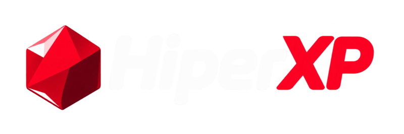
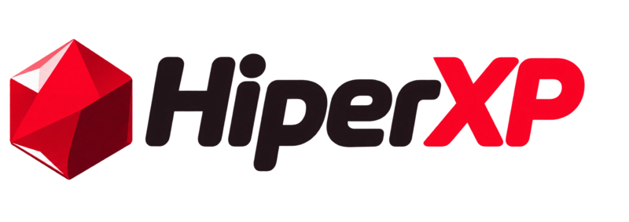
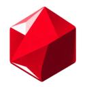

SISTEMA DE IDENTIDADE · V1.0
Seu próximo nível.
Uma gema rubi para uma comunidade que explora, descobre e compartilha. A HiperXP conecta os mapas da Cidade da Paz e Tianyu a ferramentas de drops para Perfect World.
Rubi · Energia · Comunidade
01 / A marca

Versão principal
Gema rubi + Hiper pérola + XP vermelho. Aplicar em fundos carvão e vinho escuro.

Versão clara
Gema rubi + Hiper carvão + XP vermelho. Aplicar em branco ou papel rosado.
As logos são arquivos raster com transparência. Não há arquivo vetorial ou fonte exata do lettering neste kit.
02 / Cor
Rubi#FF0036Marca e destaques Carmesim#B80028Facetas e profundidade Vinho#650C20Acentos profundos Cristal#FFD1D8Realces suaves Noite#141114Fundo principal Pérola#FAF7F8Texto escuro O rubi #FF0036 é a cor de marca, não uma amostra exata de cada faceta. Gradientes e tons internos da gema variam. As cores de interface são tokens sólidos e consistentes.
Ações no tema escuro
Botão rubi com texto carvão. Não usar texto branco pequeno sobre #FF0036: o par não alcança 4,5:1.
Ações no tema claro
Para texto branco, usar o rubi de ação #C6002B. Foco visível independente da cor da marca.
03 / Tipografia
TÍTULOS / EXO 2 EXTRA BOLD ITALIC
Explorar. Evoluir. Compartilhar.
INTERFACE / INTER
Cidade da Paz · Tianyu · Drops
Inter 400 para leitura, 500–600 para botões e 700 para destaques. Exo 2 700–800 para títulos, com itálico em chamadas. Tamanho-base 16 px e entrelinha 1,5–1,65.
O nome desenhado na logo é lettering personalizado gerado. Exo 2 acompanha a identidade como fonte de apoio e não reproduz exatamente as letras da marca. Use o arquivo da logo, sem redigitar.
04 / Ícone e favicon

Ícone · 128 pxMenu · 64 pxFavicon · 32 pxFavicon · 16 pxUsar a gema isolada em avatar, aba do navegador e navegação recolhida. Em tamanhos pequenos, a silhueta e o vermelho identificam a marca; não esperar leitura de todos os detalhes. Ícones Apple/Android e maskable acompanham fundo carvão e área de segurança.
05 / Aplicação
| LOCAL | ARQUIVO | USO |
|---|
| Cabeçalho escuro | hiperxp-escuro-800.webp | 160–200 px de largura |
| Cabeçalho claro | hiperxp-claro-800.webp | Mesma escala óptica |
| Avatar / menu | hiperxp-gema-256.png | Ícone sem lettering |
| Aba do navegador | favicon.ico | 16 / 32 / 48 px |
| Compartilhamento | hiperxp-og-1200x630.png | Prévia de link |
Área livre mínima: 1/4 da altura da gema em todos os lados. Não esticar, girar, adicionar contornos, inserir efeitos ou recolorir facetas. Logo completa a partir de 128 px de largura; abaixo disso usar o símbolo. Não colocar a marca diretamente sobre mapas e imagens movimentadas: usar uma superfície sólida.
06 / Interface da comunidade
Mapas
Superfícies escuras, filtros claros e rubi reservado para seleção e chamadas principais. Marcadores com forma e legenda próprias, sem depender só da cor.
Simulador
Inter para tabelas e números; rubi para a ação de simular. Chances, dados verificados e resultados estimados precisam de rótulos. Cor da marca não equivale a raridade.
Sucesso #62D9A0 · Atenção #F2C46D · Informação #8DBBFF. Sempre acompanhar estado de ícone e texto. Tom de voz direto, colaborativo e transparente: “Coordenada copiada”, “Progresso salvo neste navegador”, “Taxas ainda não confirmadas”.
07 / Entrega e fontes
Arquivos PNG/WebP transparentes, ICO, ícones PWA, manifesto, tokens CSS, configuração TypeScript e fontes TTF com licenças. Fontes de apoio obtidas do repositório público google/fonts: Exo 2 e Inter. Cópias das licenças acompanham os arquivos.
Este manual define a identidade; não afirma certificação de acessibilidade da aplicação. Contraste deve ser revisado nas telas reais, principalmente sobre imagens e estados de interação. Marca gerada para o projeto, sem validação de registro de marca ou domínio.